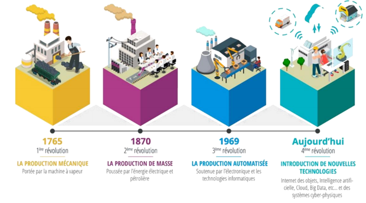
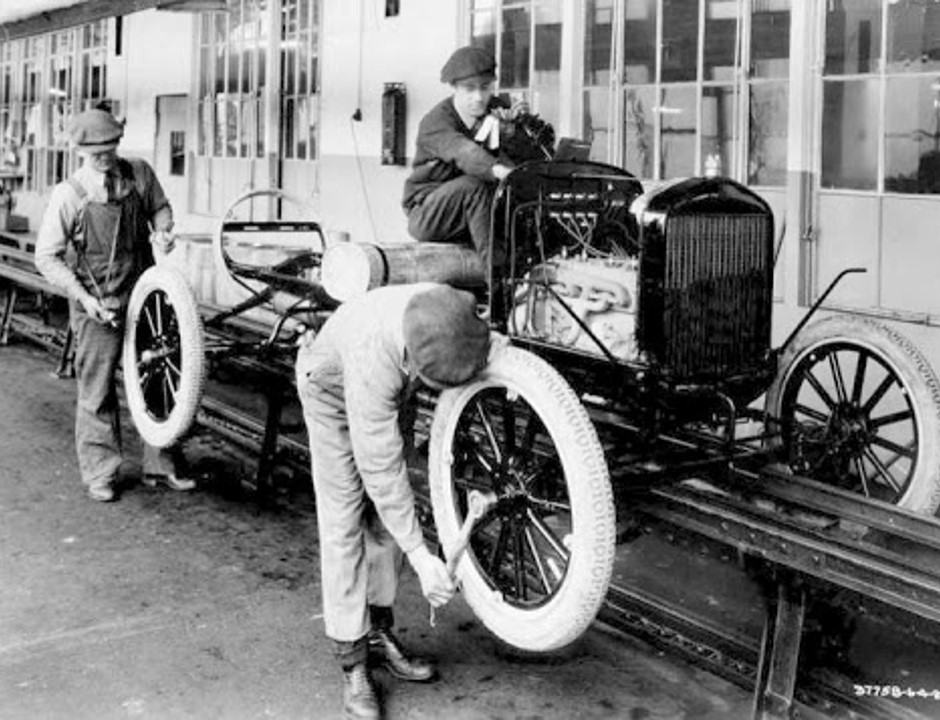
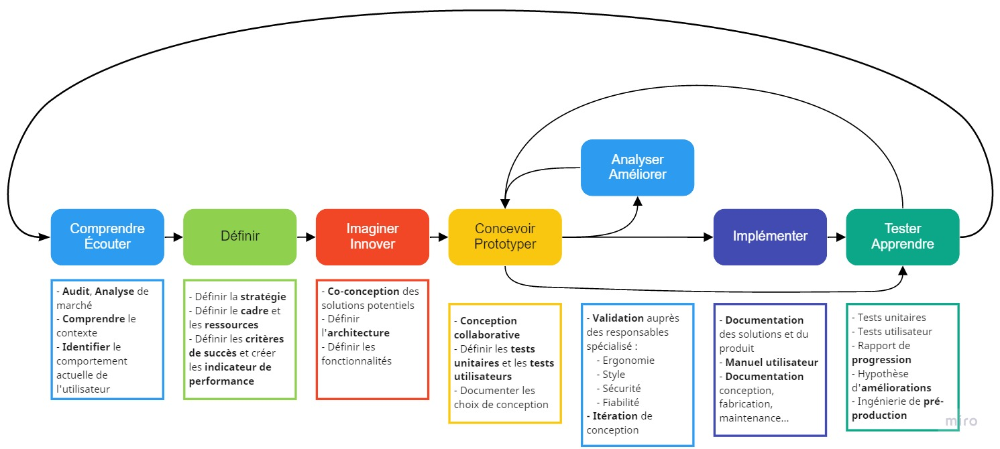
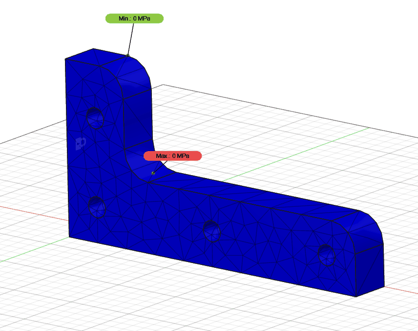

Résumé de cours : Usine numérique
Contexte et définition
Une brève histoire de l’industrie
L’usine numérique est en soi une composante d’un thème plus vaste encore : L’industrie du futur. Pour bien comprendre ce dernier, on utilise souvent la notion de quatrième révolution industrielle, faisant suite à :
- La production mécanisée
- La production de masse,
- L’automatisation.
Pour aborder simplement l’usine de demain, il est d’usage de commencer par regarder dans le passé, pour comprendre comment l’industrie se transforme au fil des âges.

L’industrie, à proprement parler, est née de la mécanisation, c’est-à-dire du passage de petites manufactures locales à des sites de production mécanisés plus vaste. Ces usines tiraient profit des nouvelles machines à vapeur fonctionnant grâce à la combustion de la houille (charbon). Notons aussi que grâce aux voies de chemin de fer et plus particulièrement à la locomotive à vapeur, les marchandises, les matières premières, et même les travailleurs pouvaient être acheminé directement sur le site de production. Les usines pouvaient alors rassembler un grand nombre de travailleurs au même endroit, c’est le début du machinisme et du prolétariat. Le travail ne peut plus alors être envisagée sans une dimension technique nécessitant des biens de production (capitaux).
Plus tard, une succession d’inventions refaçonnèrent l’industrie. D’abord, la démocratisation de l’électricité, les avancées en chimie puis le développement rapide du moteur à explosion, ont bouleversé le 19e siècle au point de transformer profondément l’organisation du travail dans l’usine.
Cette réorganisation en faveur des performances est, notamment, permise par la flexibilité des installations électriques. Là où il fallait une acheminer de l’eau, du charbon dans une machine à vapeur, complexe et imposante, il faut désormais un câble électrique et un moteur électrique.

Cette deuxième révolution a grandement simplifié les infrastructures permettant une organisation du travail plus en adéquation avec les produits fabriqué.
Au 20e siècle, on assistera encore à une révolution industrielle. Avec l’essor de l’électronique et par conséquent de l’informatique, les usines deviennent plus intelligentes. C’est le début de l’automatisme. Le numérique bouleversera le contrôle des systèmes de production en permettant des cadences plus élevées, et une production supervisée.
C’est l’industrie telle que nous la connaissons aujourd’hui. Pourtant, une autre révolution se profile à l’horizon. La quatrième révolution industrielle.
Cette fois, plusieurs technologies sont en cause. Elles existent déjà, mais sont seulement sous-utilisées. : le cloud, l’intelligence artificielle, la blockchain, l’impression 3D, la cobotique ou encore le jumeau numérique. Toutes ses technologies existent à l’échelle de prototype, pourtant, elles sont en passe de transformer l’industrie mondiale au point d’entrer dans une période économique florissante.
Les enjeux de l’usine de demain
En tout temps et pour chaque révolution, l’industrie et la demande du consommateur ont évolué conjointement. Aujourd’hui, les modes de consommation changent et les attentes du consommateur aussi. En effet avec l’essor des achats en ligne, les clients attendent désormais :
- Des produits de meilleure qualité (commentaires, avis, note de qualité)
- Des produits moins chers que ceux des concurrents (comparaison plus facile)
- Des produits personnalisés (configurateur en ligne)
- Un suivi en temps réel de leurs commandes (ex Amazon)
Pour résumer
Les attente du consomateur sont les suivantes :
- Qualité
- Prix
- Personnalisation
- Suivi
S’adapter à la demande représente en soit un défi. Ajoutons à cela, les contraintes liées aux responsabilités des entreprises, c’est-à-dire le respect de :
- L’environnement (taxe carbone, hausse des prix des matières premières)
- Leurs collaborateurs (Ergonomie, fatigue physique)
- Les valeurs de leurs clients (Ethical marketing)
Pour ne rien faciliter, on peut remarquer que les innovations croissent exponentiellement. Il faut donc pouvoir réinventer le système de production très rapidement afin de rester compétitifs et de s’adapter à la demande changeante.

De plus, on remarque que les innovations sont tellement nombreuses qu’il est devenu difficile d’identifier parmi les innovations simplement populaires les innovations qui impacteront durablement le système productif.

Pour résumer
Pour synthétiser, on peut dire que l’usine de demain doit être :
- Agile
- Responsable
- Performante
L’ère du numérique
Conception numérique
Aussi appelée Digital Mock-up, la maquette numérique d’un produit ou d’un système est, comme son nom l’indique, une version virtuelle d’un composant, d’un système ou d’un environnement. La maquette numérique est utilisée depuis plusieurs années pour accélérer les cycles de conception produit. Elle permet notamment de s’affranchir du prototype physique pendant les phases d’étude préliminaire et de conception détaillée.

Aujourd’hui, les maquettes numériques peuvent être obtenues de plusieurs manières. Il est possible de réaliser un modèle réel que l’on numérisera par la suite au moyen de scanner 3D. Ou, de manière plus conventionnelle, en concevant le modèle numérique à partir de plan ou de croquis en utilisant un logiciel de conception sur ordinateur (CAO).

Bien que la conception numérique soit très largement répandue dans les bureaux d’étude de conception, les ingénieures styles et les ergonomes, utilise toujours le maquettage en argile (Plastilline) afin de concevoir l’esthétique des produits.

Voir aussi : Maquettes concept du Citroën C4 Cactus
La maquette numérique ne définit pas seulement la forme des pièces en 3D, mais permet également de définir leur matériau et par conséquent leurs propriétés physiques. Ces simulations, basées sur les méthodes d’analyse par éléments finie, permettent de valider rapidement un concept, une solution, avant une étude approfondie des performances de cette dernière.

Attention toutefois à interpréter correctement ces résultats, biens que les simulations par éléments finis soit relativement accessible et précise, il ne s’agit que d’une approximation pouvant aider la conception voire d’une vérification du dimensionnement avant une phase de tests.
Fabrication numérique
Déjà présente depuis la 3e révolution industrielle, la fabrication numérique et toujours au centre de l’attention. On parle de fabrication numérique lorsqu’on est en capacité de fabriquer une pièce à partir de données numériques. Généralement, ces données sont en fait un programme de fabrication.

La plupart des pièces métalliques obtenues à partir de modèle numérique sont produite au moyen de centre d’usinage, capable de produire des pièces de grandes qualité en retirant de la matière d’un bloc de matière brut. Le langage commun de programmation de ces machines d’usinage s’apparente à du GCode, un set d’instruction simple permettant de programmer les usinages tout en conservant des fichier de petite taille. Aujourd’hui, la mémoire étant beaucoup moins contraignante qu’auparavant, on commence à voir apparaître des langages de programmation de plus en plus facile à appréhender.
Exemple :
- Programmation visuelle (no code)
- Fabrication assistée par ordinateur
- Moteur d’inférence et génération automatique de trajectoires
Il est donc plus facile de créer les programmes d’usinage qu’auparavant, plus besoin de s’encombrer d’un langage de programmation archaïque pour usiner une pièce.
Là où le changement sont plus radicales, c’est dans la méthode d’usinage. En effet, nous entendons de plus en plus parler de la fabrication additive. Bien que l’impression 3D ne soit pas si récente (1984). Elle est parvenue à se populariser auprès du grand public, permettant à n’importe qui de concevoir presque n’importe quoi.

On observe depuis quelques années des plates-formes de partage de fichier 3D destinée à la fabrication additive, des machines de plus en plus abordable. Résultat, ce ne sont plus les pièces qui voyagent, mais seulement les données relatives à ces pièces.
Imaginez maintenant que l’industrie de demain s’inspire de ce procédé, les fournisseurs n’achemineraient plus de pièces, mais enverraient simplement les fichiers de fabrication. La chaîne d’approvisionnement serait grandement simplifié !
De plus , contrairement à l’usinage, la fabrication additive décrit le processus de fabrication d’une pièce en ajoutant progressivement de la matière. Cette méthode de fabrication est beaucoup plus économe en matière première puisqu’elle n’utilise que ce qui est nécessaire.
Malgré tout, l’impression 3D est loin de supplanter les autres méthodes de fabrication. Bien que très attractive, la fabrication additive et un processus lent et couteux, en outre, pas très compétitif. Elle trouve plutôt son usage dans le prototypage rapide. Permettant aux ingénieurs de tester rapidement une idée avant de la passer en production avec des moyens plus performants (injection, moulage, fonderie, usinage).
Des machines virtuelles
Contrairement à la maquette numérique du produit évoqué précédemment, le jumeau numérique est une version virtuelle d’un produit ou du système de production qui interagît avec le système réel. Ce jumelage permet entre autres de :
- Valider la fabricabilité du produit au plus tôt dans le processus de conception,
- Optimiser la performance et la flexibilité du système de production,
- Communiquer plus rapidement en fluidifiant les échanges d’informations au sein de l’entreprise,
- Piloter en utiliser les outils d’aide à la décision et simulant des scénarios,
- Anticiper les arrêts non planifié de la chaîne de production en détectant les dérives.

Dans le cycle de développement des produits, pendant la phase de pré-production, les produits sont testé de façon à valider les performances, les normes de sécurité et d’évaluer la fiabilité des éléments du produit.
On peut distinguer le jumeau numérique du système de production des jumeaux numérique du produit. Le premier permet de pré-concevoir l’usine, les programmes automate et les éventuelles modifications de la ligne de production. Il permet aussi de créer des supervisions plus précise en couplant les données du système réel (IIOT) avec une simulation physique.
Il est aujourd’hui possible de simuler les automates (API) qui agiront comme des automates réels, les capteurs, les actionneurs, et même les opérateurs (Simulation ergonomique). Notons aussi que les automates virtuels permettent de programmer plus rapidement en s’affranchissant d’une platine électrique physique. Il est possible de tester son programme pendant la conception plutôt que lors de la mise en service.
Pour résumer
Les usages du jumeau numérique du système de production :
- Modélisation du système de production
- Simulation physique de la ligne
- Supervision précise en temps réel
- Reconfiguration, rétrofit, conception virtuelle
- Simulation d’ergonomie opérateurs
Le jumeau numérique du système de production vient compléter la chaîne numérique de l’entreprise, il doit s’intégrer parfaitement aux autres solutions logicielles de l’entreprise afin de conserver une continuité de la donnée numérique.

L’autre type de Jumeau numérique permet de simuler un produit couplé à sa version réel. Ce type de configuration permet par exemple de prendre le contrôle d’un équipement à distance ou encore de prédire des pannes d’un équipement à distance. Ce type de configuration est de plus en plus utilisé dans l’automobile afin de profiter de limiter les tests sur circuit au profit de données de terrain recueillis directement par les utilisateurs.